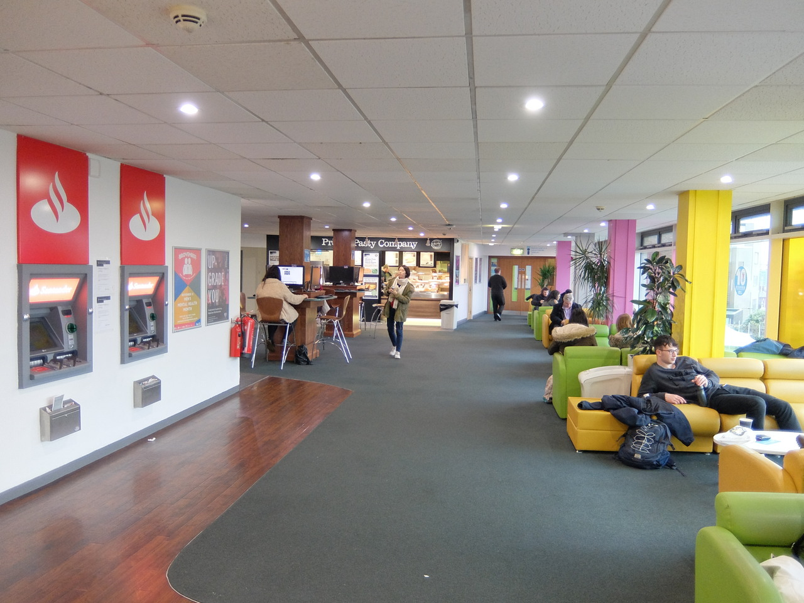
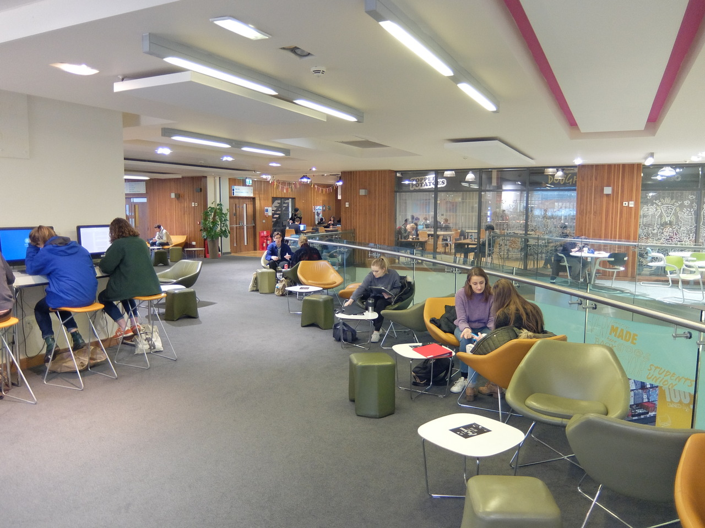

Work
Where can you find a computer?
The Students' Union is not the best place to go and sit at a computer, but if you like working here then there are a few places where you can grab one.
Level 3
On Level 3 by Proper Pasty there are a few tables of four computers each. This is probably one of the quieter corners of the Student' Union so if you prefer working in slightly quieter conditions then try and grab a computer here.
Level 4
There a few more computers upstairs on the mezzanine opposite Uni Central where you can sit and work if you don't mind the constant flow of people going to and from Uni Central, or there's a quieter space with eight computers in the far corner of the atrium overlooking the societies space.